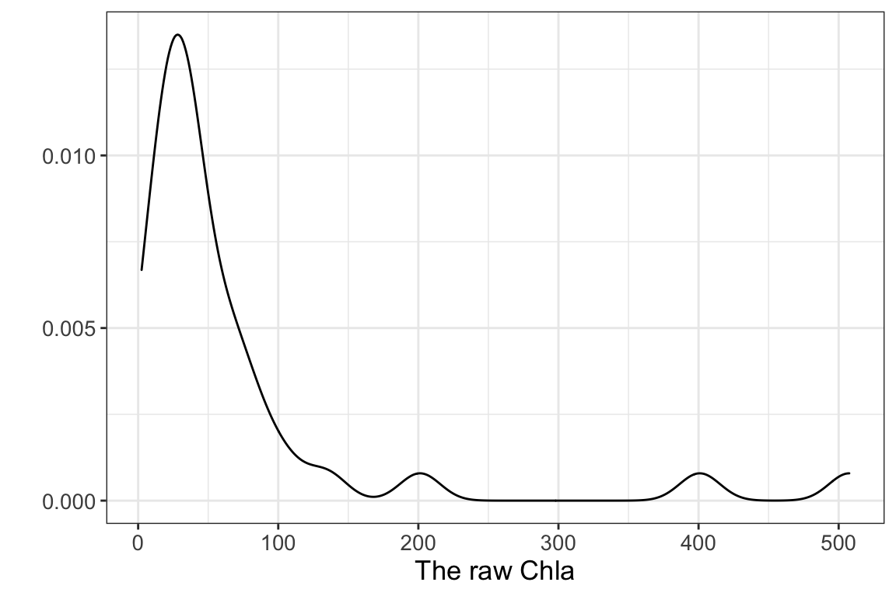
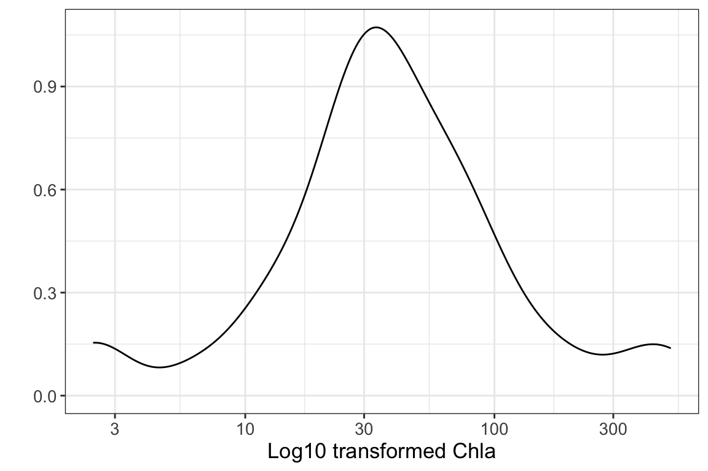
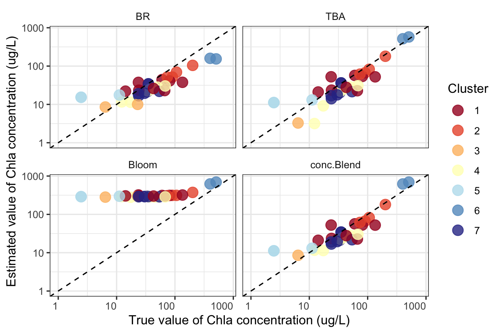
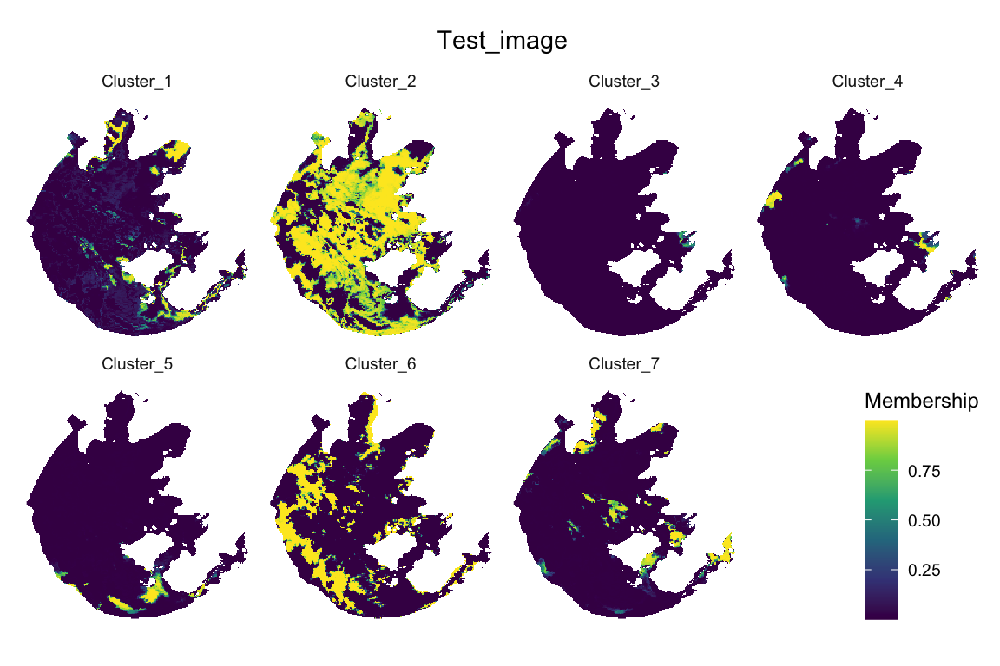
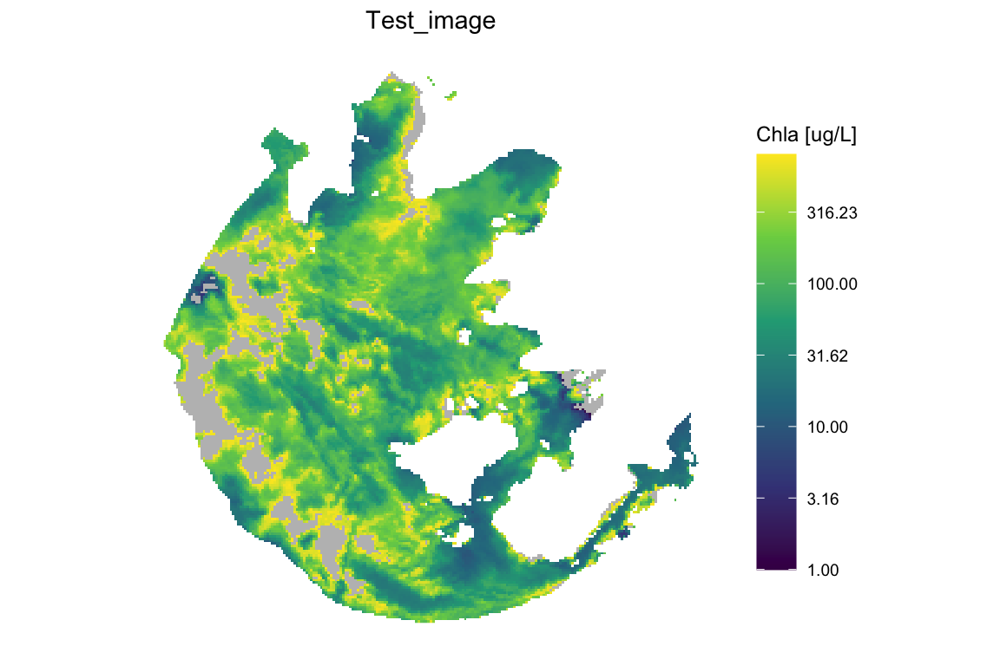

Usage of the built in centroids by FCMm
Shun Bi
2020-05-31
Source:vignettes/Usage_of_the_built_in_centroids_by_FCMm.Rmd
Usage_of_the_built_in_centroids_by_FCMm.RmdThis vignette contains two parts to introduce the usage of the built-in centroids by FCMm (see more details in Bi et al. (2019)) when using (I) new coming in situ spectra and (II) new coming raster data.
Part I: New coming in situ spectra
Preparing the data set
This demo shows how to apply FCMm to a new data set if users just want to run it by the default cluster spectra and fuzzifier. The required data sets are WaterSpec35 and Bi_clusters. The former is a dataset with water spectra of inland waters and corresponding Chla concentration (ug/L unit). The latter one is the seven water cluster spectra which trained by FCM-m method (see more details in Bi et al. (2019))
Note_1: WaterSpec35 is ONLY for the testing of FCMm in this package. If you want to use this dataset to your research, you should contact us to ask for the permit and more metadata about that by email liyunmei@njnu.edu.cn and cc to bishun1994@foxmail.com. Hope you can understand.
Note_2: The section FCM running used the default Rrs clusters. However, the input of Rrs data may not match the default wavelength settings such as quality control or atmospheric correction failure or so. Anyway, I have provided another section One more thing if your wavelength is not matching with the default.
Dataframe process
Data set plots
At first, it is necessary to check out the dataframe situation before clustering (I suppose it is also important to do that in any other researches). The density plots show that the corresponding Chla concentration is severely skewed so it allows us to do a log10-transformed when estimate or validate the candidate algorithms.
Function plot_spec_from_df() offers a quick look about the spectral dataframe. Just type help(FCMm::plot_spec_from_df) to see more details.
Note: The input of plot_spec_from_df() should be a matrix or data.frame with colnames that could be transformed into the numeric as the x-axis of the plot.
Anyway, the return of plot_spec_from_df() is a ggplot list which means you can do anything to it if you are familiar with the package ggplot2.
qplot(data=WaterSpec35, x=Chla, geom='density', xlab='The raw Chla') +
theme_bw() + theme(text = element_text(size=13))
qplot(data=WaterSpec35, x=Chla, geom='density', log='x', xlab='Log10 transformed Chla') +
theme_bw() + theme(text = element_text(size=13))
p.spec <- plot_spec_from_df(Rrs) +
labs(x='Wavelength (nm)',y=expression(Rrs~(sr^-1))) +
theme_bw() +
theme(legend.position='none', text=element_text(size=13))
print(p.spec)
FCM running
Clustering the new data
Function apply_FCM_m() provides many parameters for users to decide the process for their desired results. In the following case, result <- apply_FCM_m(Rrs=Rrs) is equal to apply_FCM_m(Rrs=Rrs, wavelength=wavelength.default, Rrs_clusters=Rrs_clusters.default, stand=FALSE, default.cluster=TRUE, m_used=1.36, option.plot=TRUE). You can see more details by typing help(FCMm::apply_FCM_m).
result <- apply_FCM_m(Rrs=Rrs, option.plot=TRUE)
summary(result)
#> Length Class Mode
#> x 15 data.frame list
#> x.stand 525 -none- numeric
#> d 245 -none- numeric
#> u 245 -none- numeric
#> Area 35 -none- numeric
#> cluster 35 -none- numeric
#> m_used 1 -none- numeric
#> K 1 -none- numeric
#> p.group 9 gg list
#> p.group.facet 9 gg list
#> dt.melt 4 data.frame list
result$p.group
result list contains several result by apply_FCM_M() (partly same to a FD list):
- x: the raw input Rrs dataframe with unit sr^-1
- x.stand: the standardized Rrs dataframe, if
stand=F - d: distance to each cluster
- u: membership values
- cluster: defined by the maximum of membership
- quality: the quality of the cluster results. See more details in
help(FCMm::apply_FCM_m) - m.used: the used value of fuzzifier(m)
- K: cluster number
- p.group: a ggplot list for plotting the cluster result
- p.group.facet: a ggplot list by facet for plotting the cluster result
- dt.plot: dataframe used for ggplot
Estimating Chla concentration by FCMm
Our package provides a new framework to estimate Chla concentration. The main point is algorithm blending which uses the advantages of candidates algorithm for their optimizing water type (such as TBA for turbid water and BR for relatively clear water). The three build-in algorithms used in FCMm are TBA, BR, and Bloom. Note that the Bloom model was designed for water bloom (or called harmful algal bloom waters with extremely high Chla concentration or scums). Please see more details in help(FCMm::FCM_m_Chla_estiamtion).
library(reshape2)
dt_Chla <- FCM_m_Chla_estimation(Rrs=data.frame(Rrs665=Rrs$`665`,
Rrs709=Rrs$`708.75`,
Rrs754=Rrs$`753.75`),
U=result$u)
dt_Chla$cluster <- result$cluster %>% as.character
dt_Chla$Chla_true <- WaterSpec35$Chla
options(scipen=10000)
subset(dt_Chla, select=c('cluster','Chla_true','BR','TBA','Bloom','conc.Blend')) %>%
melt(., id=c('cluster','Chla_true')) %>%
ggplot(data=.) +
geom_point(aes(x=Chla_true,y=value,group=cluster,color=cluster),
alpha=0.8, size=4) +
scale_x_log10(limits=c(1,800)) +
scale_y_log10(limits=c(1,800)) +
scale_color_manual(values=RdYlBu(result$K)) +
labs(x='True value of Chla concentration (ug/L)',
y='Estimated value of Chla concentration (ug/L)',
color='Cluster') +
geom_abline(intercept=0, slope=1, linetype=2) +
facet_wrap(~variable, nrow=2) +
theme_bw() +
theme(axis.text.x.bottom = element_text(hjust=1),
strip.background = element_rect(color="white", fill="white"))
MAPEs <- MAEs <- NULL
i <- 1
for(model in c('BR','TBA','Bloom','conc.Blend')){
MAPEs[i] <- cal.metrics(x=dt_Chla$Chla_true %>% log10,
y=dt_Chla[,model] %>% log10,
name='MAPE',log10=TRUE)
MAEs[i] <- cal.metrics(x=dt_Chla$Chla_true,
y=dt_Chla[,model],
name='MAE',log10=TRUE)
names(MAPEs)[i] <- names(MAEs)[i] <- model
i <- i + 1
}
names(MAPEs)[i-1] <- names(MAEs)[i-1] <- 'Blend'
print(MAPEs %>% round(2))
#> BR TBA Bloom Blend
#> 47.69 68.95 202.01 36.18
print(MAEs %>% round(3))
#> BR TBA Bloom Blend
#> 0.254 0.225 0.928 0.199It is glad to see the Blending result performs better than others with its log-transformed MAPE = NA % and MAE = NA ug/L.
One more thing
As mentioned before, the input Rrs may do not match the default wavelength from wavelength.default. This section will show you how to do that kind of clustering by FCMm.
Here we suppose the selected bands are 412.5, 442.5, 490, 510, 560, 620, 665, 673.75, 708.75, 753.75, 865, and 885. Note that the m.used of FD list may change a little if different band number is used. But we assume the difference is negligible (i.e., still equal to the former one 1.36).
Rrs_sub <- subset(Rrs, select=c(`412.5`,`442.5`,`490`,`510`,
`560`,`620`,`665`,`673.75`,
`708.75`,`753.75`,`865`,`885`))
wavelength.sub <- c(412.5,442.5,490,510,
560,620,665,673.75,
708.75,753.75,865,885)
Rrs_clusters.sub <- which(names(Rrs_clusters.default) != 'X400' &
names(Rrs_clusters.default) != 'X681' &
names(Rrs_clusters.default) != 'X779') %>%
Rrs_clusters.default[,.]
# Note the parameter settings in this function `default.cluster=F`
result_sub <- apply_FCM_m(Rrs=Rrs_sub, wavelength=wavelength.sub,
Rrs_clusters=Rrs_clusters.sub,
stand=F, default.cluster=F, option.plot=T)
result_sub$p.groupPart II: New coming raster data
Preparing the data set
This demo shows how to apply FCMm to raster data sets if users just want to run it for imagery application by the default cluster spectra and fuzzifier. The required data sets are OLCI_TH and Bi_clusters. The former is a dataset with atmospherically corrected OLCI rasters of inland waters that the AC method was demonstrated in Liu et al. (2015) (see more details about OLCI_TH by typing help(OLCI_TH)). The latter one is the seven water cluster spectra which trained by FCM-m method (see more details in Bi et al. (2019))
Dataframe process
The OLCI_TH is a RasterBrick of package raster. For running in FCMm, this RasterBrick should be converted as ImageDataframe so-called as imdf.
rm(list=ls())
library(FCMm)
library(ggplot2)
library(magrittr)
data("OLCI_TH")
data("Bi_clusters")
class(OLCI_TH)
#> [1] "RasterBrick"
#> attr(,"package")
#> [1] "raster"
# convert RasterBrick to imdf with NA value removed and xy coordinates recorded
imdf <- raster::as.data.frame(OLCI_TH, na.rm=T, xy=TRUE)
x_name <- which(names(imdf) == "x")
y_name <- which(names(imdf) == "y")
imdf <- cbind(imdf[,c(x_name, y_name)], imdf[,-c(x_name, y_name)])
names(imdf)[-c(1,2)] <- c(412.5,442.5,490,510,
560,620,665,673.75,
708.75,753.75,865,885)
FCM running
Clustering the raster and Chla estimation
Function apply_to_image() provides many parameters for users to decide the process for their desired results. You can see more details by typing help(FCMm::apply_to_image).
Note: The process might take a long time which depends on your local machine.
res <- generate_param(c(413,443,490,510,560,620,665,674,709,754,865,885))
im_result <- apply_to_image(input=OLCI_TH, res=res, title.name="Test_image",
Chla_est=T, output_image=F)
#> Since we have not check the input image file,
#> please make sure the wavelength of image file and cluster dataframe match correspondingly.
#> The normalization of spectra is default in thie version!
#> Apply fcm to image dataframe ......
#> Plotting membership values ......
#> Plotting clusters ......
#> Note: this function is designed for OLCI or MERIS band settings!
#> The following bands (also as their names) must be contained in Rrs:
#> Rrs665 Rrs709 Rrs754
#> Plotting Chla concentration ......
#> Saving the results to the list ......
#> output_membership
#> output_cluster
#> Done!
summary(im_result)
#> Length Class Mode
#> input 791136 RasterBrick S4
#> res 3 -none- list
#> raster.memb 346458 RasterBrick S4
#> raster.cluster 49494 RasterLayer S4
#> p.memb 9 gg list
#> p.cluster 9 gg list
#> p.truecolor 9 gg list
#> p.Chla 9 gg list
#> imdf 14 data.frame list
#> imRrs.raw 12 data.frame list
#> imRrs.n 12 data.frame list
#> res.FCM 8 -none- list
#> res.Chla 11 data.frame listim_result list contains several result by apply_to_image():
- input: what we input character link to image file or
rasterobject - res: condition input of
apply_to_image() - raster.memb: raster object of membership value
- raster.cluster: raster object of cluster
- p.memb: ggplot list of membership value map
- p.cluster: ggplot list of cluster map
- p.truecolor: ggplot list of truecolor map
- p.Chla: ggplot list of Chla map
- imdf: data.frame of raw Rrs including xy coordinates
- imRrs.raw: data.frame of raw Rrs
- imRrs.n: data.frame of normalized Rrs
- res.FCM: list of
FCM.new()result - res.Chla: data.frame includes the template and final Chla estimation results